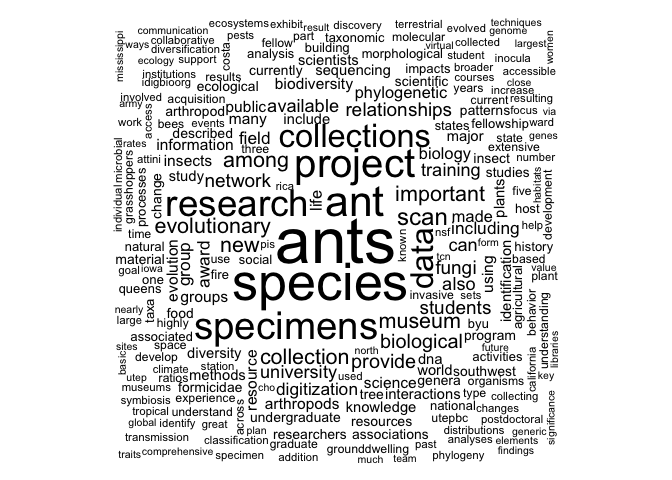
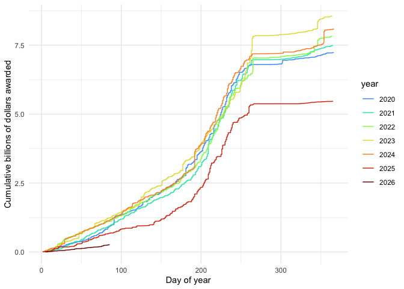

Unofficial package to interface with NSF API
It also has abstracts, dates, and more information for all grants up to March 28, 2026.
This will give you a data.frame with all data: head(grants)
It has multiple date fields which are in “%m/%d/%Y” format (but everything is stored as a raw list, leaving to the user to process it).
You can also do a new search. For example, to get all info on ants:
library(rnsf)
ants <- rnsf::nsf_return(keyword="Formicidae")
#> [1] "Finished first batch"There is a function for doing a wordcloud:
library(rnsf)
nsf_wordcloud(ants$abstractText)
We can plot funding over time, inspired by (but not endorsed by) Jeremy Berg’s graphs on federal funding (see https://jeremymberg.github.io/jeremyberg.github.io/)
library(rnsf)
library(ggplot2)
library(timeDate)
library(dplyr)
#>
#> Attaching package: 'dplyr'
#> The following objects are masked from 'package:stats':
#>
#> filter, lag
#> The following objects are masked from 'package:base':
#>
#> intersect, setdiff, setequal, union
library(viridis)
#> Loading required package: viridisLite
data(grants) # or use grants <- rnsf::nsf_get_all() to get the most current list (will take hours) or grants <- nsf_update_cached() to update from the last cached version
grants$date <- as.Date(grants$date, format="%m/%d/%Y")
grants$year <- format(grants$date, "%Y")
grants$dayofyear <- timeDate::dayOfYear(timeDate::timeDate(grants$date))
grants$estimatedTotalAmt <- as.numeric(grants$estimatedTotalAmt)
grants <- grants |> arrange(year, dayofyear) |> group_by(year) |> mutate(estimatedTotalAmt_by_year = cumsum(estimatedTotalAmt)) |> ungroup()
grants <- grants[!is.na(grants$year),]
grants_recent <- subset(grants, year>=2020)
g <- ggplot(grants_recent, aes(x=dayofyear, y=estimatedTotalAmt_by_year/1e9, colour=year)) + geom_line() + theme_minimal() + xlab("Day of year") + ylab("Cumulative billions of dollars awarded") + scale_colour_viridis_d(option="turbo", begin=0.2)
print(g)
We can also look at a table with the number, not total money, of grants by state by year, for example (showing just the first few states, and only including this year up to the last cache of the data).
library(tidyr)
library(knitr)
grants_aggregated <- grants |> filter(year > 2023) |> group_by(year, awardeeStateCode) |> summarise(total_awarded = n(), .groups = "drop_last") |> ungroup() |> tidyr::pivot_wider(names_from = year, values_from=total_awarded, values_fill=0) |> dplyr::arrange(desc(`2024`))
knitr::kable(head(grants_aggregated,15))| awardeeStateCode | 2024 | 2025 | 2026 |
|---|---|---|---|
| CA | 1260 | 947 | 70 |
| NY | 846 | 627 | 37 |
| TX | 739 | 579 | 40 |
| MA | 737 | 494 | 18 |
| PA | 525 | 398 | 26 |
| IL | 495 | 346 | 14 |
| MI | 423 | 285 | 20 |
| FL | 409 | 284 | 24 |
| VA | 388 | 228 | 14 |
| NC | 363 | 284 | 21 |
| GA | 308 | 225 | 11 |
| IN | 296 | 240 | 13 |
| CO | 294 | 219 | 9 |
| AZ | 278 | 164 | 12 |
| NJ | 269 | 228 | 10 |